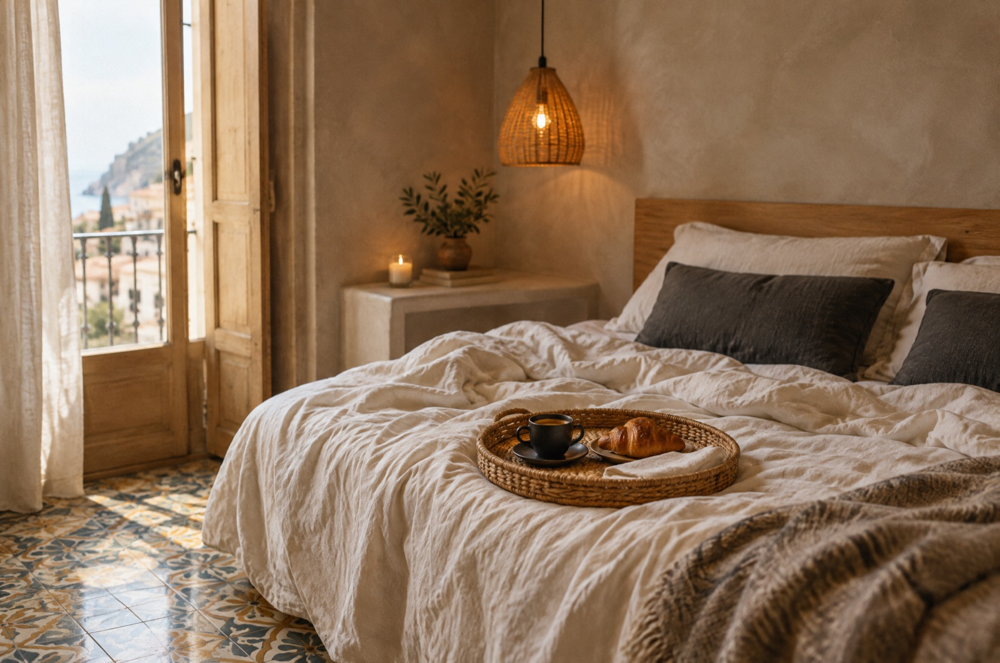

Pescara · Via Nicola Fabrizi 171, scala C
Scorri per entrare
Posizione 9,5 su Booking.com
La porta giusta, tra la stazione e il mare.
Camere con lino e cementine a quattro minuti dalla spiaggia. Prenoti qui, senza commissioni, e ti scriviamo su WhatsApp.
Il civico 171
Una porta al civico 171, scala C. Dentro: lino, cementine e camere che sanno di casa. Fuori: la stazione a ottocento metri e il mare a quattro minuti.
Il percorso
Dalla stazione al mare, passando da noi.
Tutto si fa a piedi. Distanze dalla nostra porta, ricavate dalle schede pubbliche: approssimative e fuori scala.
- 01Stazione di Pescara800 m · circa 10 minuti
- 02Fabrì 171Via Nicola Fabrizi 171, scala C
- 03Piazza della Rinascita2 minuti a piedi
- 04Spiaggia e Lungomare4 minuti a piedi
- 05Ponte del Marecirca 1 km
Camere
Tre camere, una scala C.
Tariffe dimostrative. Prenotando dal sito il prezzo è circa il 10% più basso che sui portali.
Immagine concept: sostituire con le foto reali della struttura.
Prenota diretto
Stesso letto, senza commissioni.
I portali trattengono circa il 15% di ogni prenotazione. Dal sito quella quota non esce dalla struttura e noi ne restituiamo una parte a te.
Dopo la prenotazione
Nessuno davanti al portone.
Su WhatsApp ricevi tutto al momento giusto. Quando sei a dieci minuti, scrivici: un nostro host ti aspetta.
- SubitoLa conferma, con codice e date.
- Due giorni primaIndirizzo, orari e come arrivare.
- Il giorno dell'arrivo«Sono a dieci minuti» e ti aspettiamo.
- Dopo la partenzaUn grazie e, se vuoi, una recensione.
Ciao Anna, la tua prenotazione FBR-K7P2 a Fabrì 171 è confermata: Economy, arrivo sabato 31 ottobre. Due giorni prima ti scriviamo qui con tutte le istruzioni.
Ciao Anna, manca poco! Check-in 14:00–23:00. Siamo al civico 171, scala C. Quando sei a circa 10 minuti scrivici qui: un nostro host ti aspetta e ti accompagna in camera.
Siamo a 10 minuti 🙂
Perfetto Anna, ti aspettiamo al 171. Il Wi-Fi è gratuito in tutta la struttura. Buon viaggio!
Grazie Anna, è stato un piacere averti da Fabrì 171! Se ti sei trovata bene, una recensione ci aiuta molto. La prossima volta prenota direttamente dal nostro sito.
Esempio dei messaggi automatici. Testi demo da confermare con il gestore.
Recensioni
Cosa dicono gli ospiti.
Punteggi dalla scheda Booking.com, su 10 (ottobre 2026).
Citazioni dalla scheda Booking.com, da usare con il permesso degli autori.
Prima di arrivare
Tutto quello che serve.
- Check-in
- 14:00–23:00. Servono un documento e una carta al check-in.
- Check-out
- Entro le 10:00.
- Dove
- Via Nicola Fabrizi 171, scala C, Pescara. Mappa ↗
- In camera
- Non fumatori, niente feste. Animali e culla gratuita su richiesta.
Come funziona l'arrivo?
Ti scriviamo su WhatsApp due giorni prima. Quando sei a circa dieci minuti, scrivici: un nostro host ti aspetta.
Posso arrivare tardi?
Il check-in è fino alle 23:00. Se arrivi dopo, scrivici su WhatsApp prima di partire.
Si paga online?
No: in struttura, con contanti o carta, oppure con bonifico anticipato.
Posso cancellare?
Cancellazione gratuita fino a 48 ore prima dell'arrivo (proposta demo).
Parlate inglese?
Sì: rispondiamo in inglese su WhatsApp e via email.